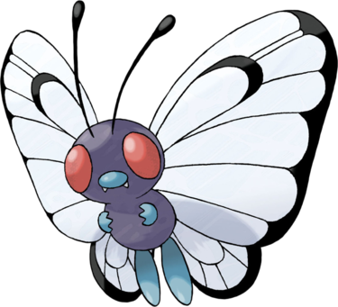

Papilusion est une sorte de papillon possédant de grandes antennes. Il est violet avec des parties bleues ; ses ailes, très grandes pour sa taille, permettent notamment les capacités de type Vol et l'utilisation de diverses poudres. Comme pour les insectes réels, ses yeux sont probablement composés. Ses ailes possèdent des motifs comme les papillons. Il a deux grands pieds qui ne semblent pas posséder de doigts, mais deux mains qui en ont trois sur chacune d'elles. Papilusion a deux petites dents qui semblent sortir de son nez. Ses antennes sont de longues tiges noires avec une boule au bout. Il adore le pollen.